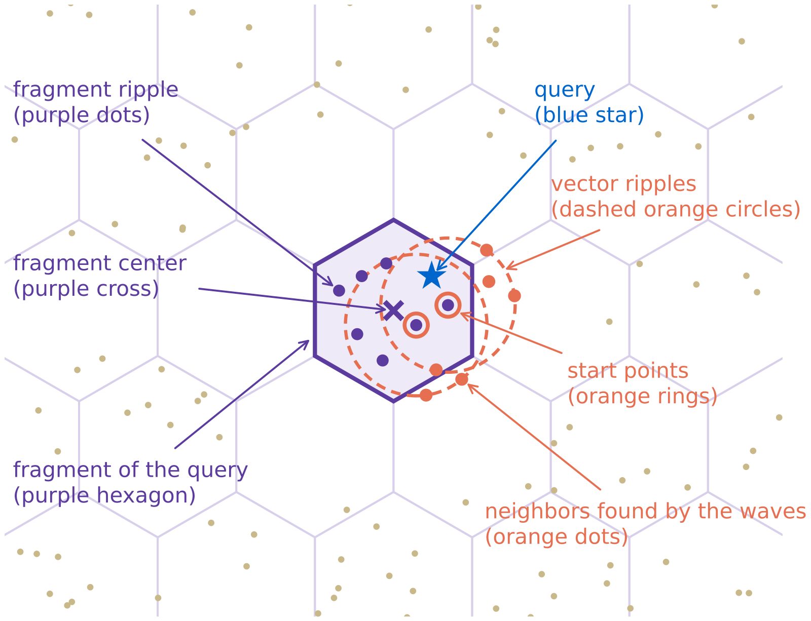
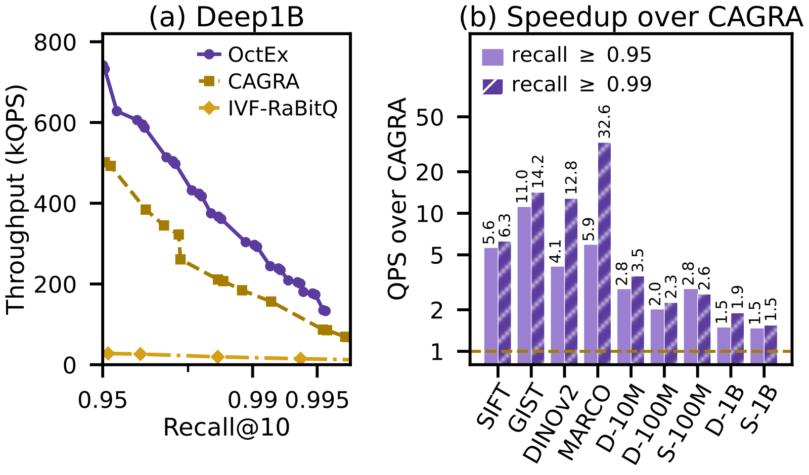
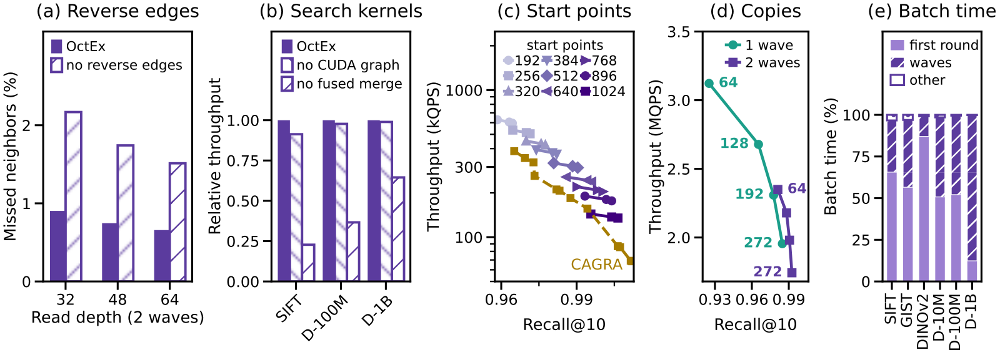

Contents · 9 sections
1What problem is it solving?2The big picture: one query in five steps3Why projections, and why the E8 lattice?4Why store lists instead of cell members?5Why a few rounds over neighbor tables?6Experiments: how much faster, and why less at one billion7Where I think it falls short8How a retrieval team could try it9VerdictSHARE
GPU vector search teams should read this. It shows that at high recall, graph search is held back by its chain of dependent rounds, not by distance computation itself. The paper spends GPU memory (HBM) on neighbor lists precomputed at build time: a query reads its candidates from hundreds of stored tables (one per random projection) in one parallel step, then adds only a fixed few rounds. The core idea in one sentence: graph search must sort before every next step, while OctEx lets the query compute which tables to read, reads them in one step, and then adds a few rounds over stored neighbor tables. On four H100 GPUs at recall 0.95 to 0.995, it is 2.0 to 46.4 times faster than CAGRA (the GPU graph index in cuVS and the standard GPU baseline) on seven datasets of up to one hundred million vectors; on the one billion vectors of Deep1B and SIFT1B (two public billion-vector datasets), the gain shrinks to 1.46 to 2.05 times.
What problem is it solving?
Start with how graph search moves. CAGRA-style indexes link every vector to a few dozen neighbors. A query starts from entry points, and every round expands the current best few points, computes the distances of their neighbors, sorts, and then decides whom to expand next. Which points the next round expands depends on the sort of the previous round, so rounds can only run one after another. Distances within a round run in parallel, but a thread block must wait for the slowest distance and the sort before it can start the next round.
A higher recall target needs a longer candidate list and more rounds. An illustrative scenario: a RAG service must find the 10 nearest of the 8.8 million MS MARCO passages for every question. At recall 0.95, graph search needs relatively few rounds; the paper measures that on this corpus CAGRA must quadruple its candidate list to climb from recall 0.987 to 0.996. The billion-vector Deep1B shows the same: CAGRA falls from 156k QPS at recall 0.992 to 87k QPS at 0.995.
| Recall target (illustrative) | Dependent rounds in graph search | Dependent steps in OctEx (W is 1 to 6, set per configuration) |
|---|---|---|
| 0.95 | fewer | W+1 |
| 0.99 | more | W+1, mainly via more start points |
| 0.995 | more still | W+1, with at most one or two more rounds |
The chain also caps what extra memory can buy: more memory cannot shorten it, because every round still waits for the last. The paper computes that a billion-vector CAGRA graph plus half-precision vectors fills 298 of the 372 GiB of HBM on four H100s, and the rest cannot help.
IVF indexes (IVF-PQ, IVF-RaBitQ) have no chain, since a query probes a fixed number of clusters in one pass. But they scan every compressed vector of every probed cluster, and the authors measure their throughput on four H100s one to two orders of magnitude below CAGRA.
The big picture: one query in five steps

One OctEx query has five steps. The first three together form one parallel step, and every round after that adds one, for W+1 dependent steps in total:
- One matrix multiply projects the query into hundreds of random projections, and each projection computes which cell the query falls into.
- Each projection reads the first r entries of the list stored for that cell; the union, deduplicated, is the first batch of candidates.
- Small fingerprints rank the candidates: an approximate distance between the query and each candidate is computed on only the first few dozen principal coordinates, and the nearest S become start points.
- A fixed W rounds follow: every start point reads its own stored neighbor table. The new candidates are sorted by fingerprint together with the candidates kept so far, and only the top batch is kept; expanded candidates stay in this batch but are not expanded again. The best S in it not yet expanded become the next start points.
- After the last round, the R best by fingerprint in this kept batch get their full half-precision vectors read for exact distances, and the top 10 are returned. At one billion vectors the full vectors live in host memory and only 32 are reranked at the end.
Because every step has a fixed shape, a whole batch can be recorded as CUDA graphs and run across all four GPUs without host synchronization. The paper counts this as a main contribution: on SIFT1M (one million SIFT image descriptors), going from one to four GPUs raises OctEx throughput 3.4 times, against 1.8 times for CAGRA.
The key split: precomputation at build time replaces search at query time, and a fixed few rounds recover what the first round missed. Now the parts.
Why projections, and why the E8 lattice?
To read candidates in one step, a query must compute from itself alone which table to read. The direct approach cuts space into cells and stores, for each cell, the vectors nearest its center. But in hundreds of dimensions, a small ball around a query meets almost every partition before it reaches the tenth neighbor, so cells in the original space do not work.
So OctEx first reduces dimension. It finds the top 64 principal directions of the data; each "copy" draws a random 32-dimensional orthonormal projection inside these 64 dimensions, adds a random shift, and divides by the cell size f. A query uses the same projection as the build. The 32 coordinates split into 4 blocks of 8. Each block is rounded to its nearest E8 point. E8 is a regular arrangement of points in 8 dimensions whose cells are the roundest known, so vectors that share a cell are mostly close. The 4 points together are the vector's cell id in that copy (the paper calls it a fragment).
One copy will miss neighbors, since a cell boundary can split a true neighbor from the query. The fix is hundreds of copies, each with its own direction and shift. A vector close to the query usually shares its cell and is therefore close to the cell center, so it tends to be in that cell's stored list. An illustration: if a true neighbor enters the list the query reads in one copy with probability 30%, then over 200 copies it is read 60 times on average, and missing it in every copy becomes very unlikely.
Cell size is a trade-off. Small cells separate near from far well, but most queries land in cells with no data; large cells always hold data but mix near and far. OctEx uses 5 cell sizes at once (2.0 to 5.0 projected standard deviations), and in each copy the query uses the finest size whose cell has a stored list.
Why store lists instead of cell members?
Earlier CPU methods (C2LSH, SuCo and others) enumerate the members of a query's cells at query time and count them. But the number of vectors per cell varies widely, while GPUs need fixed-shape parallel work.
At build time, for every cell with at least vectors, OctEx stores a list of the l vectors nearest the cell center in projected distance. At one billion vectors every stored cell has at least 100 members, far more than the 16 list entries, so it simply sorts the cell's members by distance to the center and keeps the first l; smaller datasets have few members per cell and instead search the whole dataset with the cuVS IVF-Flat index. A query reads only the first r. The stored list approximates the list nearest the query when the query lies near the center. Finer cells bound how far the query can sit from the center, so the approximation improves; longer lists cover a wider range but take more memory.
Cells with too few vectors are not stored, and the query falls back to the next coarser size. As long as queries follow the data distribution, sparse cells rarely receive queries, so this saves memory at a small loss of recall.
Why a few rounds over neighbor tables?
The first round finds most neighbors, but some fall into a different cell from the query in almost every copy. To recover them, every vector also stores a neighbor table: its nearest vectors in the original space. In each round, the current best S candidates read their neighbor tables in parallel.
This looks like graph search, but the number of rounds differs. OctEx fixes W in each configuration (1 to 6 in the paper), so a query has W+1 dependent steps in total, however large its candidate pool. Higher recall comes mainly from more start points, plus at most one or two more rounds. Graph search must keep walking until its candidate list settles, longer at higher recall.
The neighbor tables also hold reverse edges: if v lists u among its first few nearest, u's table also records v. So even if no vector lists v as a near neighbor, v is reachable: v lists u, u's table therefore holds v, and any round that expands u finds v. Hoot says

Illustrative: the vectors u, v and the table contents are made up and only show the direction of a reverse edge.
Source
paper §3.4 (a neighbor row holds forward neighbors plus reverse entries: v is a reverse entry of u if v lists u among its first k_s forward neighbors).Candidates can number in the thousands, and reading all full vectors is too expensive. So every vector also stores a small fingerprint: its first few dozen principal coordinates, each in 8 bits, 64 to 128 bytes per vector. The ranking distance uses only these coordinates, so it is approximate, but it reads just one fingerprint row. Ranking and choosing start points use only fingerprints; full vectors are read for only a few candidates. This split also decides placement at one billion: fingerprints and neighbor tables are read every round and must stay in HBM, while full vectors are read only 32 times per query at the end and can live in host memory.
Experiments: how much faster, and why less at one billion
Experiments run on one server with four H100s (93 GiB each), on nine datasets from one million to one billion vectors, measured by recall@10 and QPS. Every system sweeps its own parameters; at each recall target the best throughput on the Pareto frontier is compared.

| Dataset | Recall | Speedup over CAGRA |
|---|---|---|
| MS MARCO (8.8M passage embeddings) | 0.95 → 0.995 | 5.9× → 46.4× |
| GIST1M (960 dims) | 0.95 / 0.99 | 11.0× / 14.2× |
| Deep100M | 0.95–0.995 | 2.0×–2.5× |
| Deep1B | 0.95–0.995 | 1.48×–2.05× |
| SIFT1B | 0.95–0.995 | 1.46×–1.85× |
On MS MARCO the gain grows with recall, because CAGRA must quadruple its candidate list to climb from 0.987 to 0.996 while OctEx keeps the same number of dependent steps. So OctEx really wins at the high-recall end.
The gain shrinks with size, to 2.0 to 2.5 times on Deep100M, because a larger dataset needs more copies and rounds to reach the same neighbors. On Deep1B the rounds over neighbor tables (including the final rerank) take 88% of a batch, against 12% to 48% up to one hundred million vectors. At one billion, the cost of each round decides throughput.

The ablations show what each part contributes. Reverse edges cut missed neighbors on Deep100M from 2.2% to 0.9% at a throughput cost of only 2.6% to 3.7%. The fused merge kernel picks start points in shared memory; without it, all candidates must be sorted in global memory, and throughput falls to 23% on SIFT1M, 37% on Deep100M and 65% on Deep1B. Dropping CUDA graphs costs far less: 9% on SIFT1M and at most 2.3% on larger datasets. Copies and rounds can replace each other: on Deep100M, 64 copies with two rounds beat 192 copies with one round in both recall and speed. Moving the neighbor tables to host memory cuts throughput by 2.6 to 3.9 times, because random row reads from host memory are two orders of magnitude slower than from HBM. This means keeping the neighbor tables in HBM is a hard constraint at billion scale.
Building is about three times slower than CAGRA but stays under an hour: one billion vectors take 44 to 47 minutes on four H100s. The cell lists come from sorting, so they take only 12 to 14 minutes; most of the rest builds the neighbor tables by running OctEx's own search with every vector as a query. The first pass reads only the cell lists and gives a first version of the tables; the second adds two rounds over that first version, which makes the tables more accurate. The two passes take 28 minutes together.
Where I think it falls short
First, the gain is modest at billion scale. On the same Deep family it is 2.0 to 2.5 times at one hundred million and 1.48 to 2.05 times at one billion. The gains above ten times come from high-dimensional sets such as GIST1M (one million 960-dimensional image descriptors) and MS MARCO. This means the large factors come mainly from high dimension and do not carry over to the low-dimensional billion-vector sets.
Second, it trades memory for speed. The Deep1B index takes 316 GiB of HBM plus 179 GiB of half-precision vectors in host memory. Lists of 32 entries do not fit next to the fingerprints and neighbor tables, so every list keeps only 16; even so, each GPU uses 80.2 of its 93 GiB. Teams short on HBM cannot copy it directly.
Third, it suits indexes built once and queried many times. All lists are computed at build time, and the authors themselves say it fits datasets that are indexed once and queried often.
How a retrieval team could try it
- Start on your own corpus of up to one hundred million vectors with the open-source Python package (one line replaces the cuVS or Faiss call), and measure throughput at recall 0.99 and above to see whether it approaches the paper's speedups.
- Then test batch size: on Deep1B, shrinking the batch from 10,000 to 100 queries raises the gain over CAGRA from 1.6 to 3.4 times. Online services with small batches should test this most.
- Finally, do the memory budget: work out whether fingerprints and neighbor tables fit in HBM at your data size. If they must move to host memory, throughput falls 2.6 to 3.9 times; if only the lists are tight, shorter lists or fewer copies cost a little recall.
Verdict
When the recall target forces graph search into long dependent chains, spending memory on stored lists fixes the number of dependent steps; that is the idea to take away.
| Dimension | Assessment |
|---|---|
| Problem importance | High. RAG and deduplication need high recall, where graph search slows down fastest |
| Novelty | Medium-high. Projections plus cells are not new; stored lists plus a fixed number of rounds make them fit the GPU |
| Evidence | High. Nine datasets, six baselines, median throughput, ablations, and billion scale |
| Engineering cost | Medium-high. Large memory footprint and close to an hour to build; suits rarely updated indexes |
| Worth trying | Yes. Most for high-recall services with up to one hundred million vectors and spare HBM |
How did this read for you?
Hoot made a note. Thanks for the feedback.
One tap, no sign-in; tap again to undo. Only anonymous counts are kept, never who you are.
Discussion
Add experiment details, reproduction notes or a different take. Requires a GitHub sign-in.
Loading the discussion…